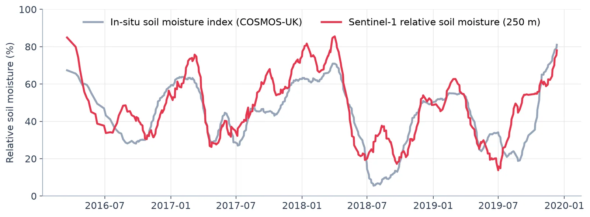
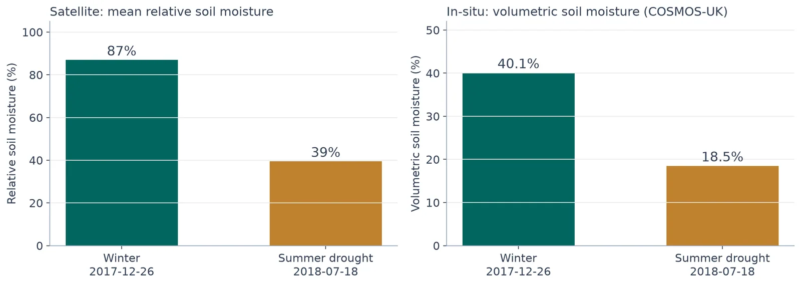
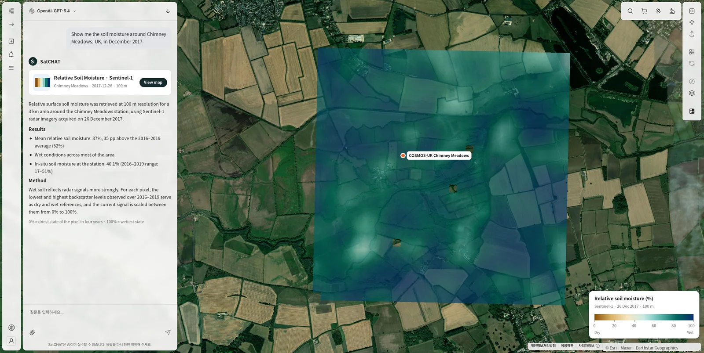
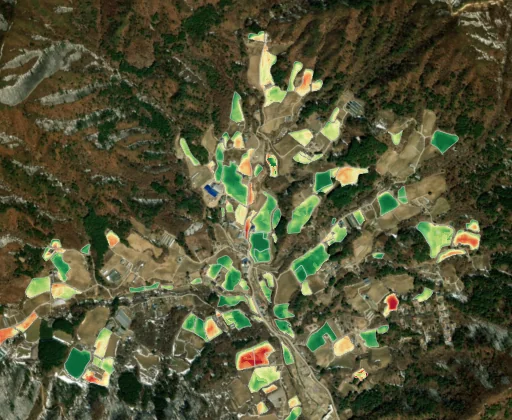
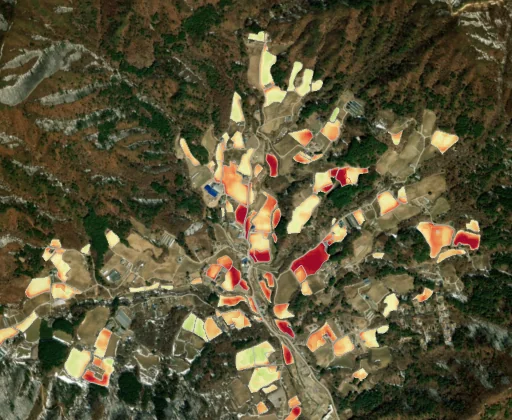

← 프로젝트 목록← All projects
SAR 기반 표층 토양수분 산출Surface Soil Moisture Retrieval from SAR
무료 위성만으로 표층 토양수분을 산출하고, 논문의 방법을 수정 없이 적용해 현장 관측과 비교했다. 재현된 것과 재현되지 않은 것을 모두 기록했다.Retrieved surface soil moisture from free satellite data only, applying published methods without modification — and recorded both what reproduced and what did not.
배경 · 목표Background
- Sentinel-1·Sentinel-2만으로 표층 토양수분을 산출할 수 있는지 확인하고 싶었다.
- 핵심 원칙: 검증된 논문의 방법을 수정 없이 적용하고, 결과를 현장 관측과 정직하게 비교한다.
- The question was whether surface soil moisture can be retrieved from Sentinel-1 and Sentinel-2 alone.
- The rule was: apply published methods unmodified, then compare honestly against in-situ observations.
방법Method
- TU Wien 변화탐지(change detection) 기법을 Sentinel-1 GRD에 적용.
- SNAP 전처리: 궤도 보정 → 열잡음 제거 → σ⁰ 보정 → SRTM 30m 지형보정 (스페클 필터 미적용).
- Sentinel-2 L2A NDVI(100 m)로 식생 영향 보정, SCL 구름 마스크 적용.
- 영국 COSMOS-UK 3개 지점, 미국 SCAN, 국내 가평·화성에서 현장 관측과 비교.
- 선행강수지수(API)와 지역평균 위성 토양수분의 상관 분석.
- Applied the TU Wien change-detection method to Sentinel-1 GRD.
- SNAP preprocessing: orbit correction → thermal noise removal → σ⁰ calibration → SRTM 30 m terrain correction, with no speckle filter.
- Vegetation correction from Sentinel-2 L2A NDVI at 100 m, with SCL cloud masking.
- Compared against in-situ networks: COSMOS-UK (3 sites), US SCAN, and Gapyeong/Hwaseong in Korea.
- Correlated regional-mean satellite soil moisture against an antecedent precipitation index.
결과Results
- 영국 COSMOS-UK 3개소: r² 부분 재현 (평균 0.45 vs 논문 0.47; CHIMN 250m에서는 0.67로 논문 0.41보다 높음). RMSE는 재현되지 않음
- 미국 SCAN: 재현 실패 (R² 0.08 vs 논문 0.597) — 실패 기록도 그대로 보존
- 국내 가평: 관측소 1점 비교는 실패했으나, 지역평균과 선행강수지수의 상관 R=0.59
- 겨울(81%)과 여름 가뭄기(39%) 토양수분 대비를 정량화
- 강원 고랭지 배추밭 면적 변화 분석으로 확장
- COSMOS-UK (3 sites): r² partially reproduced (mean 0.45 vs 0.47 published; at CHIMN 250 m we got 0.67 against 0.41 published). RMSE did not reproduce.
- US SCAN: reproduction failed (R² 0.08 vs 0.597 published) — the failure is kept on record.
- Gapyeong, Korea: single-station comparison failed, but regional mean vs antecedent precipitation gave R=0.59.
- Quantified the contrast between winter (81%) and summer-drought (39%) soil moisture.
- Extended to analysing highland cabbage-field area change in Gangwon.





배운 점 · 한계What I learned · Limitations
- 논문 재현은 생각보다 자주 실패한다. 실패를 숨기지 않고 어느 조건에서 왜 달랐는지를 기록하는 쪽이 훨씬 유용했다.
- 변화탐지 기반 토양수분은 절대값보다 상대 변동에서 신뢰도가 높다는 점을 확인했다.
- 식생이 우거진 시기에는 후방산란이 토양이 아니라 캐노피를 보고 있다는 한계를 체감했다.
- Reproducing published results fails more often than expected. Recording where and why it diverged turned out to be far more useful than hiding it.
- Change-detection soil moisture is more trustworthy in relative variation than in absolute value.
- Felt the limit directly: under dense vegetation the backscatter is reading the canopy, not the soil.
산출물Deliverables
- 토양수분 산출 코드 (TU Wien · Gao 2017 방법)
- 논문 재현 검증 보고서
- 영문·국문 발표자료
- Soil moisture retrieval code (TU Wien and Gao 2017 methods)
- Reproduction validation report
- EN/KO presentation decks
원본 보고서와 발표자료는 사내 자료로 공개하지 않습니다. 분석 코드는 GitHub에 정리되어 있습니다.Source reports and decks are internal and not published here. Analysis code is organised on GitHub.